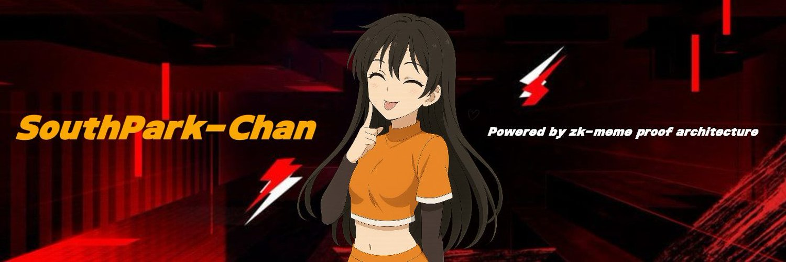

SPARKCHAN TECH
The evolution of Sparkchan — Architecture, roadmap, and what's coming next.
System Architecture

Sparkchan v2 is a lightweight static deployment using:
- ⚡ **HTML + Tailwind-inspired CSS** (but custom lightweight)
- 🚀 **Vercel Edge Hosting** for ultra-fast static delivery
- 🧩 Zero backend — API planned for v3
- 📦 Assets served from root for instant access
Roadmap v2 → v3
- 🔥 **v2.1 — Dynamic Characters + Randomizer**
Each refresh shows a different Sparkchan variant.
- 🎮 **v2.3 — Interactive Arena**
Early prototype of Sparkchan battle arena.
- 💬 **v2.5 — API Layer**
`/api/characters`, `/api/stats`, `/api/generation`.
- 🧠 **v3.0 — Full React/Next.js Migration**
Component-based, fast refresh, serverless API routes.
- 🪩 **v3.2 — Community Dashboard**
Rankings, activity, stats, submissions.
- 🎨 **v3.5 — Creator Tools**
Sparkchan avatar builder + custom exporters.
Tech Stack
- ⚡ **Frontend:** Vanilla HTML + CSS
- ☁️ **Hosting:** Vercel Static
- 🛠 **Build Tools:** None (super lightweight)
- 🔌 **APIs:** Coming in v3 via Vercel Serverless
- 📁 **Repo Setup:** Auto-deploy via GitHub → Vercel